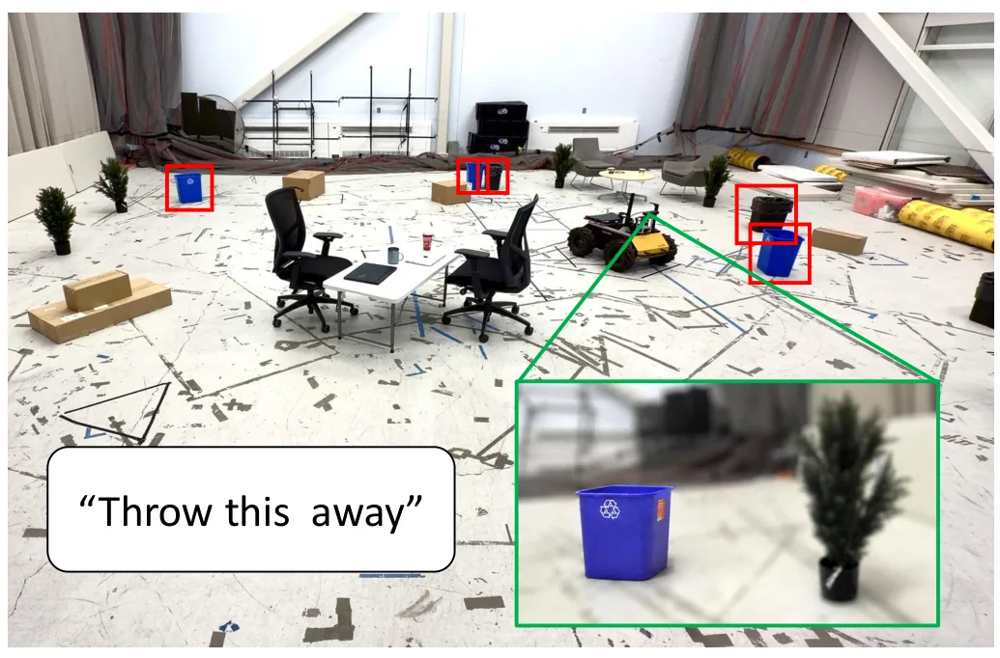
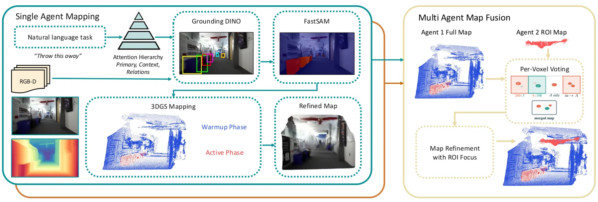
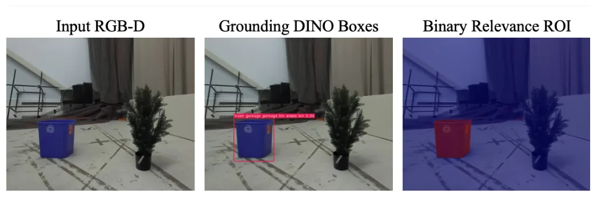
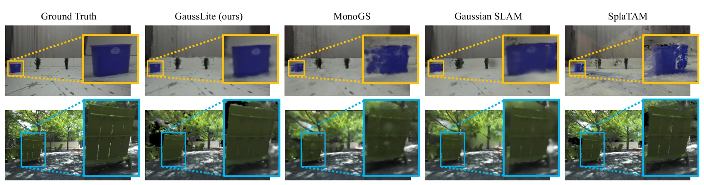
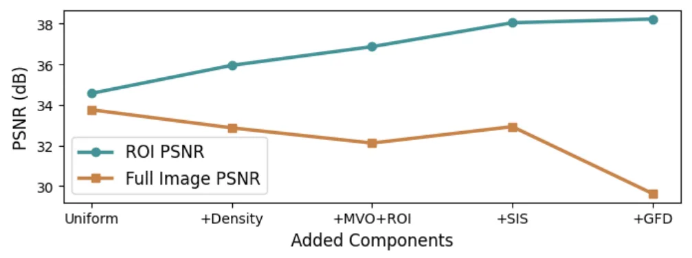
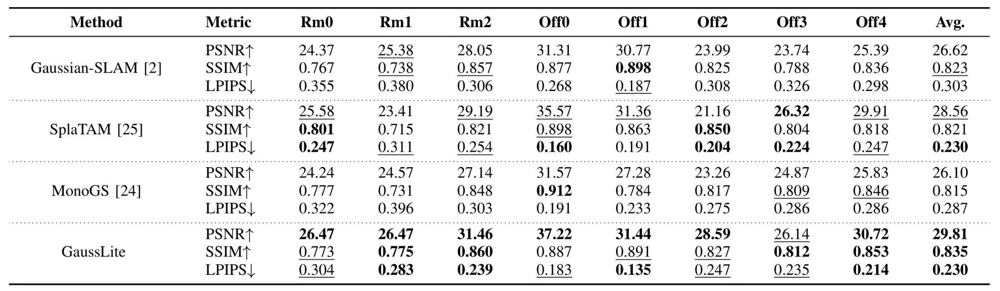
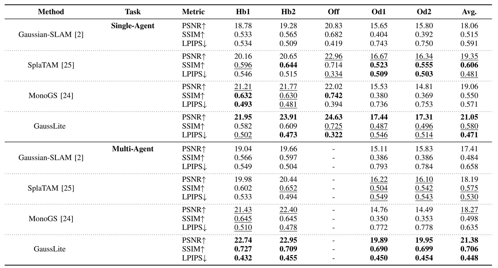
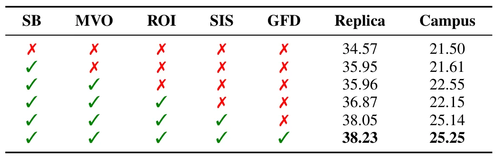
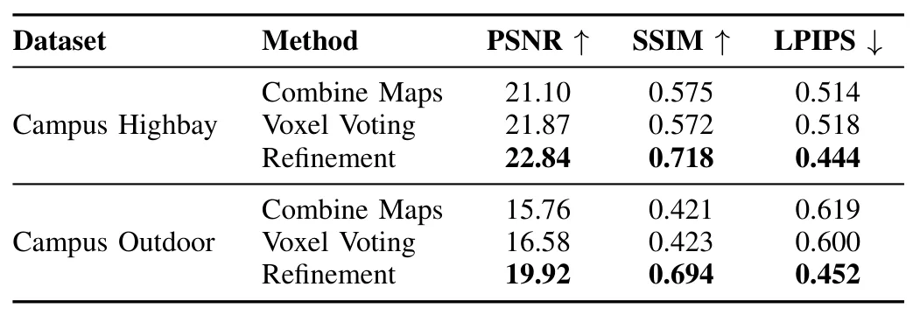

GaussLite：面向实时机器人建图的在线任务条件 3D Gaussian SplattingGaussLite: Online Task-Conditioned 3D Gaussian Splatting for Real-Time Robotic Mapping
直接命中 3DGS、实时机器人建图、任务驱动地图压缩和多机器人地图融合，是今天与 SLAM/3DGS 主线最相关的论文。
一句话工作总结
把自然语言任务转成 Gaussian 地图的区域优化预算，使 3DGS 在线机器人建图更关注任务相关物体/区域。
摘要
现有 3D Gaussian Splatting 建图通常把表示容量均匀分配给整场景，但机器人下游任务往往只关注少量关键区域，导致机载算力浪费。GaussLite 根据自然语言任务说明动态分配 3DGS 表示密度：LLM 解析目标与锚点物体，开放词表检测和分割逐帧生成 relevance mask，再用相关性控制 Gaussian seeding density、gradient flow 与 scaling。论文在资源受限硬件上以 4 Hz 在线建图，在 Replica ROI PSNR 上平均提升 +2.72 dB，真实室内外演示提升 +2.23 dB；还展示了两个任务专用 agent 通过 active-optimization counts 实时融合地图，只需共享平均 7.08% 地图。
Existing 3D Gaussian Splatting (3DGS) systems distribute representation capacity uniformly across a scene, ignoring the fact that many downstream robotic tasks engage only a fraction of the reconstructed geometry. This causes valuable onboard compute to be allocated towards optimizing irrelevant parts of the scene, either limiting online capacity or under-optimizing the most relevant parts of the scene. We introduce GaussLite, a task-driven 3DGS mapping system that conditions its representation density on a natural-language task specification. Given a posed RGB-D stream and a task such as "prepare to pick up the object on the desk," GaussLite uses a one-shot LLM parser to extract target and anchor objects, which are grounded per-frame by an open-vocabulary detector and segmented to produce per-pixel relevance masks in real time. The mapper allocates seeding density, gradient flow and scaling by task relevance. At matched Gaussian budget and real-time mapping at 4 Hz on resource-constrained hardware, GaussLite outperforms baselines on ROI PSNR on the Replica Dataset by an average +2.72 dB and on a real-hardware demonstration in indoor and outdoor settings by +2.23 dB. We further show that two task-specialized agents' maps can be fused into a single shared map via per-voxel voting on active-optimization counts in real time, outperforming concatenation by +3.42 dB while only sharing an average 7.08% of the map.
中文解读摘录
- 为什么看：今天最贴近机器人建图主线。它不再把 Gaussian 容量均匀分配给整场景，而是根据自然语言任务把优化重点放在任务相关区域，适合资源受限机器人在线建图。
- 方法要点：LLM 一次性解析任务中的目标/锚点物体；开放词表检测与分割生成逐帧 relevance mask；建图时按相关性调节 Gaussian seeding density、gradient flow 与 scaling。
- 结果信号：在 Replica ROI PSNR 平均提升 +2.72 dB，真实硬件室内/室外演示提升 +2.23 dB；两个任务专用 agent 还能用 active-optimization counts 做实时地图融合，平均只共享 7.08% 地图。
- 跟踪建议：重点看 relevance mask 延迟、开放词表误检对建图的影响、4 Hz 实时条件下的 GPU/内存预算，以及任务专用地图融合是否能接入多机器人 SLAM 后端。
- 链接：abs · PDF
图表/页面预览
{kind=link}

{kind=link}

{kind=link}

{kind=link}

{kind=link}

{kind=link}

{kind=link}

{kind=link}

{kind=link}
